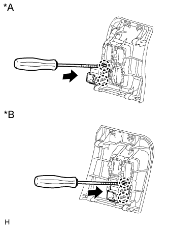

УПРАВЛЯЮЩИЙ ПЕРЕКЛЮЧАТЕЛЬ АМОРТИЗАТОРА > СНЯТИЕ |
| 1. ОТСОЕДИНИТЕ ПРОВОД ОТ ОТРИЦАТЕЛЬНОГО ВЫВОДА АККУМУЛЯТОРНОЙ БАТАРЕИ |
| 2. СНИМИТЕ НИЖНЮЮ ОТДЕЛОЧНУЮ НАКЛАДКУ ПАНЕЛИ ПРИБОРОВ В СБОРЕ |
 |
Освободите 4 фиксатора.
Отсоедините все разъемы и снимите отделочную накладку панели приборов.
| 3. СНИМИТЕ УПРАВЛЯЮЩИЙ ПЕРЕКЛЮЧАТЕЛЬ АМОРТИЗАТОРА |
|  |
Открепите 2 захвата и снимите управляющий переключатель амортизатора с нижней отделочной накладки панели приборов.
| *A | Для моделей с левосторонним рулевым управлением |
| *B | Для моделей с правосторонним рулевым управлением |